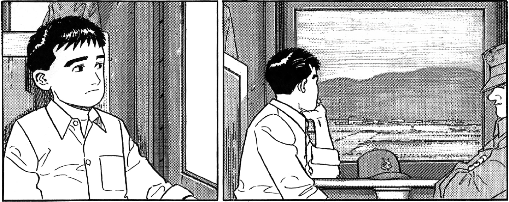
Gare de Kyôto, direction Kurayoshi.
9 avril 1963, 9h12 du matin.
9 avril 1963, 9h12 du matin.

Ainsi, le train me conduisait vers ma ville natale...
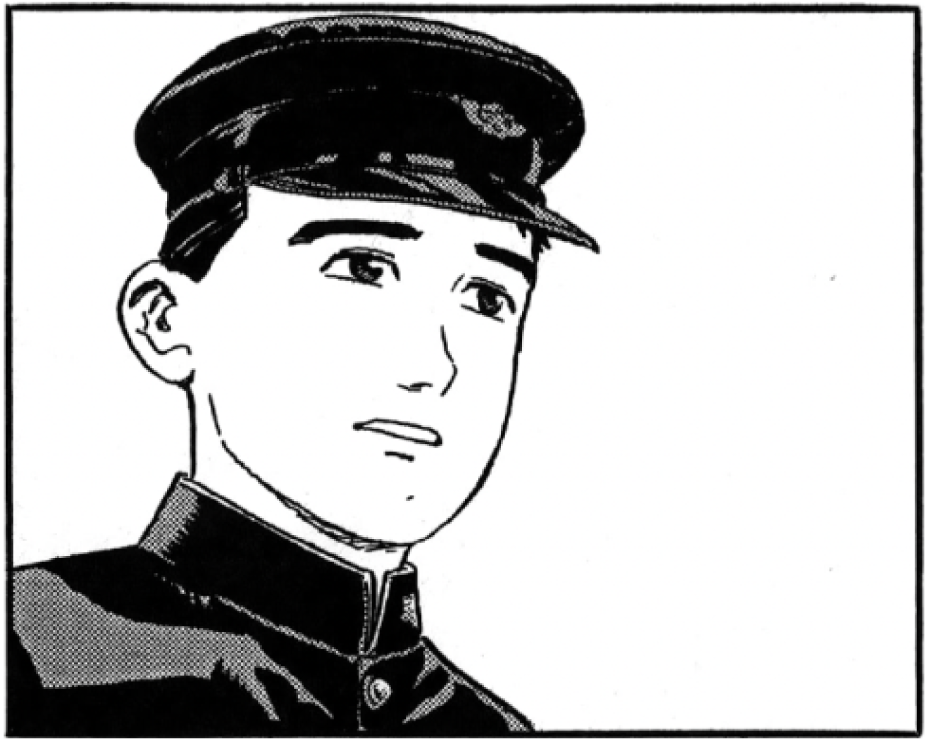
Au début, je m'étais inquiété
pour les cours...
pour les cours...
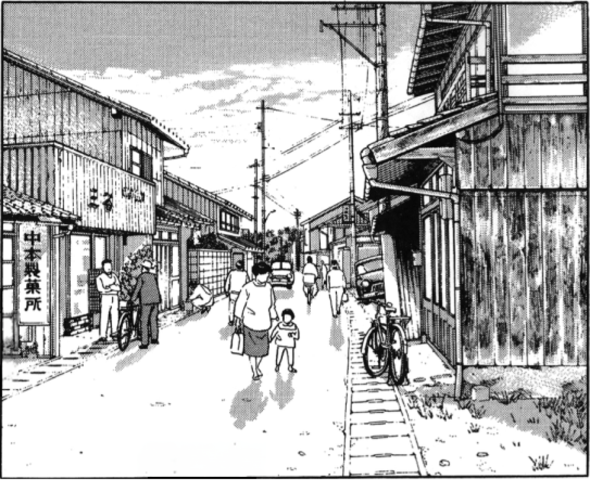
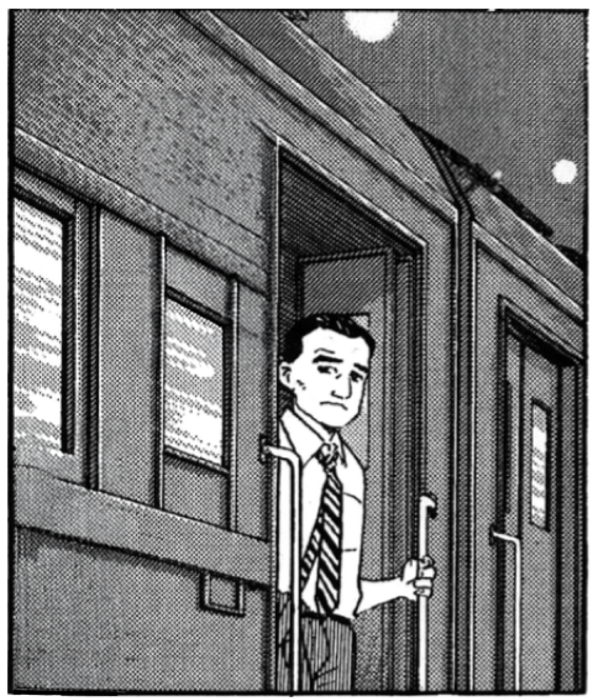
Ce soir là, je me suis demandé si mon père
allait bien revenir de ce nouveau voyage à Tottori.
allait bien revenir de ce nouveau voyage à Tottori.
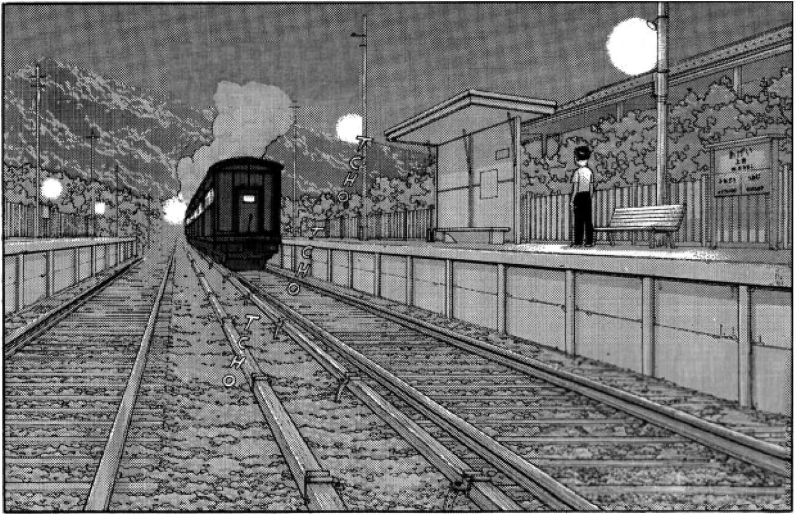
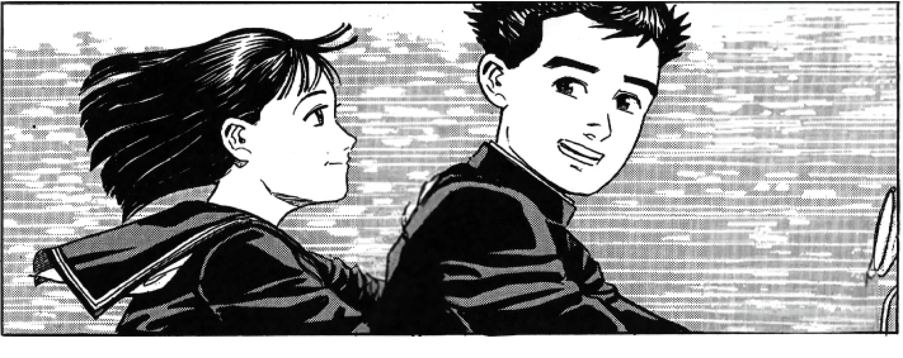
Ces moments passés avec Tomoko étaient
les seuls ou je parvenais à oublier mon père...
les seuls ou je parvenais à oublier mon père...
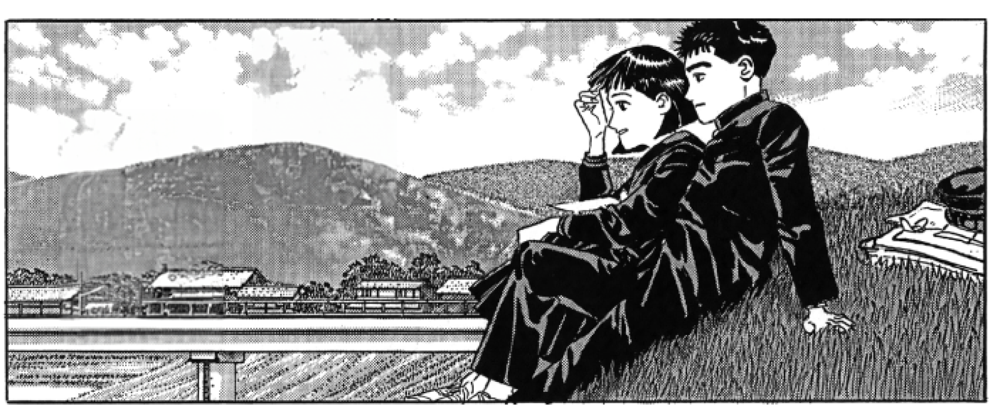
Je retrouvais cette sensation de liberté,
de fraîcheur, trop longtemps égarée...
de fraîcheur, trop longtemps égarée...
Comment avais-je pu si
longtemps oublier...
longtemps oublier...
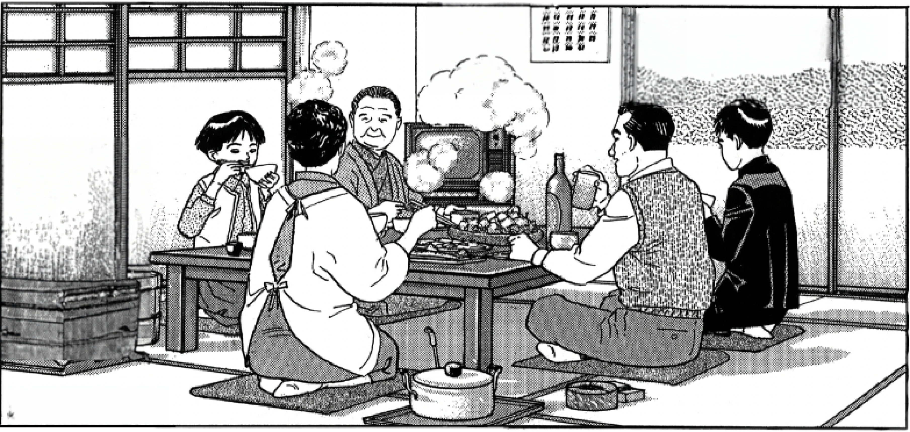
L'apaisante douceur qui se trouvait là ?...
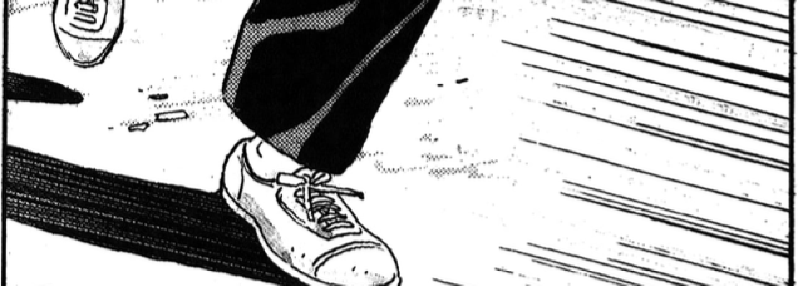
Le temps semblait suspendu...
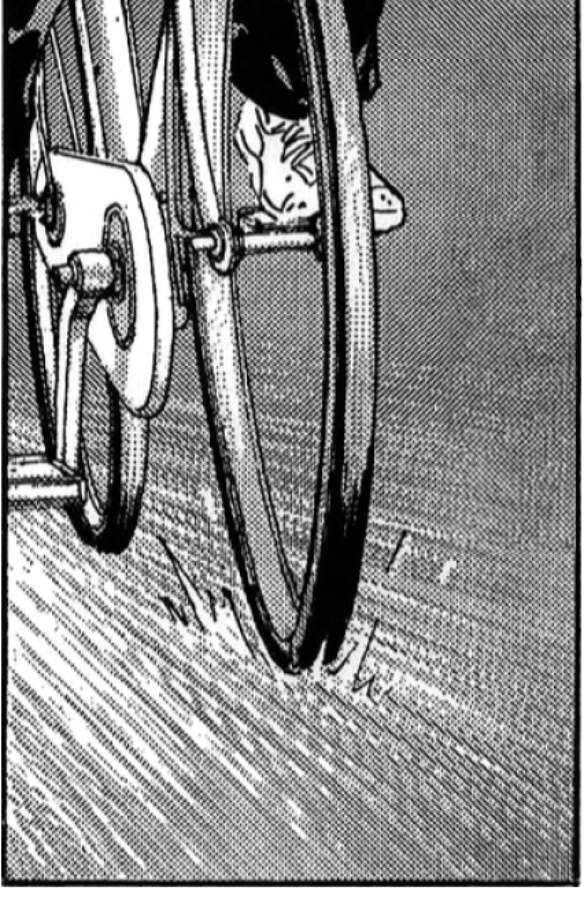
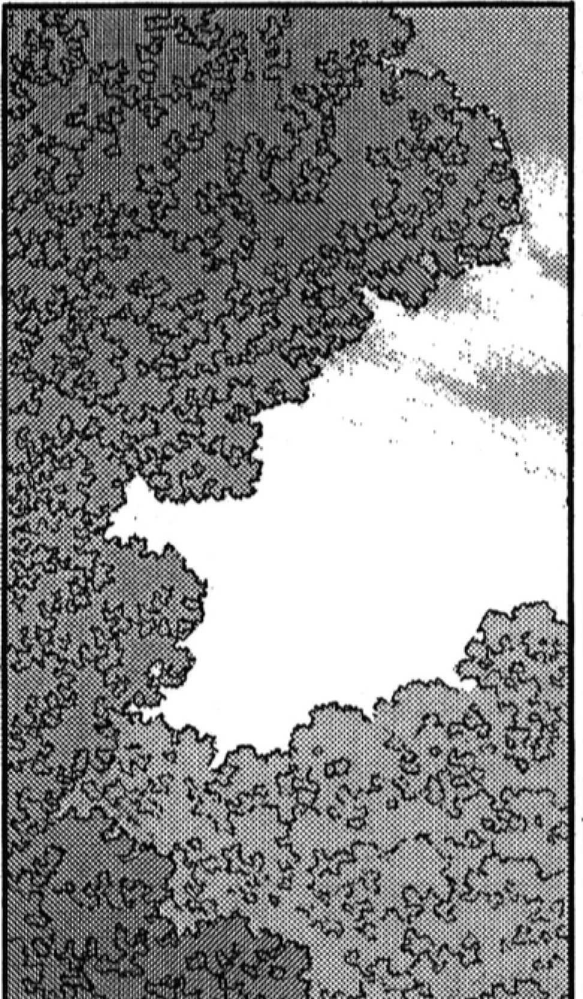